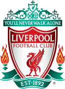
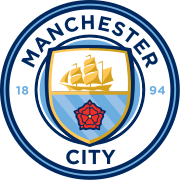
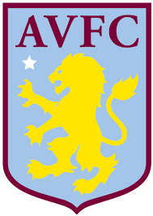
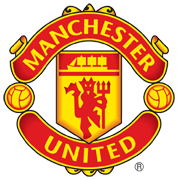

Premier League
No room for racism
Why Klopp and Guardiola's last battle could be the best yet
Alex Keble looks at the key talking points in the final Premier League meeting between the Liverpool and Man City managers.
Title race: Who has the toughest remaining matches?
See the fixtures that will decide who of Liverpool, Man City or Arsenal are 2023/24 champions.
Will Watkins or Son prove decisive in top-four showdown?
Adrian Clarke analyses in-form Villa and Spurs stars who have 45 goal involvements between them ahead of Sunday's encounter.
Premier League Table
| Position | Club | Played | Won | Drawn | Lost | GF | GA | GD | Points |
|---|---|---|---|---|---|---|---|---|---|
| 1. | |
28 | 20 | 4 | 70 | 24 | 46 | 64 | |
| 2. |  | 28 | 19 | 2 | 65 | 26 | 39 | 64 | |
| 3. |  | 28 | 19 | 3 | 63 | 28 | 35 | 63 | |
| 4. |  | 28 | 17 | 7 | 59 | 41 | 18 | 55 | |
| 5. | |
27 | 16 | 6 | 59 | 39 | 20 | 53 | |
| 6. |  | 28 | 15 | 11 | 39 | 39 | 0 | 47 |
Club News
Jürgen Klopp press conference: Man City clash, Anfield factor and Guardiola
Jürgen Klopp is relishing being involved in a contest with the magnitude of Liverpool’s Premier League game against Manchester City on Sunday.
IT’S BEEN A PLEASURE TO FACE JURGEN, SAYS PEP
Pep Guardiola says it’s always been a pleasure to face Liverpool under Jurgen Klopp as he gets set for one final hurrah against him in the Premier League.
Latest FPL News
Millions of FPL managers suffer Solanke horror.Bournemouth forward misses from spot after being most-bought player and No 2 captain for Double Gameweek 28.